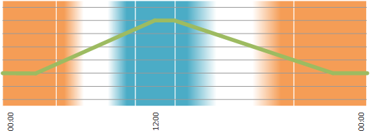

以人为本的照明 (HCL)
Introduction
以人为本的照明 (HCL) 可减轻工作场所非自然光的不健康副作用。
HCL 功能控制一天中一个房间、多个房间、楼层或整个建筑物的亮度和色温。目标是积极影响房间居住者的福祉。
亮度和色温遵循两个独立的图表，由调度程序表示，在 24 小时的周期内。此类图表不存在标准，最好由灯光规划师提供。 Desigo 提供默认配置的 HCL 调度程序，以近似一天的自然进程。
HCL standard schedule

Key
00:00 - 00:00 | 时间 |
亮度 | |
暖白 | |
瞬态 | |
冷白 |
欲了解更多信息，请参阅：
- YouTube: Human Centric Lighting (HCL) – short version
- YouTube: Human Centric Lighting (HCL) – long version
DALI type 8 lighting ballast

以人为本的照明需要/由 DALI 设备类型 8 照明镇流器支持。
具有 DALI 设备类型 8 的镇流器允许通过两个独立值（档位）控制亮度和色温。此类装置根据 IEC 62386-209 进行标准化：数字可寻址照明接口 – 第 209 部分：控制装置的特殊要求 – 颜色控制（设备类型 8）。